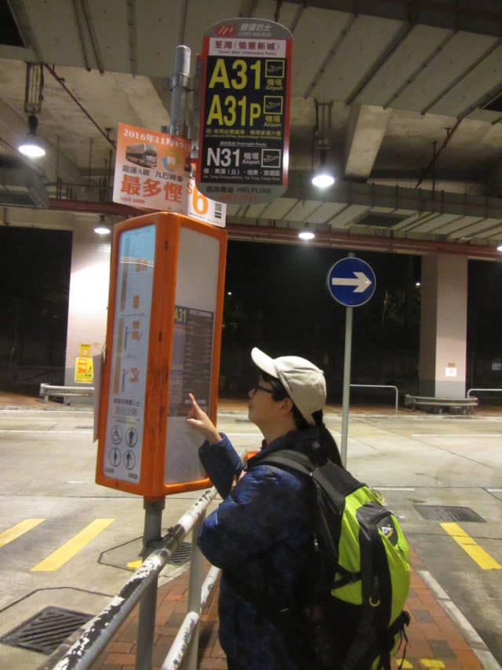
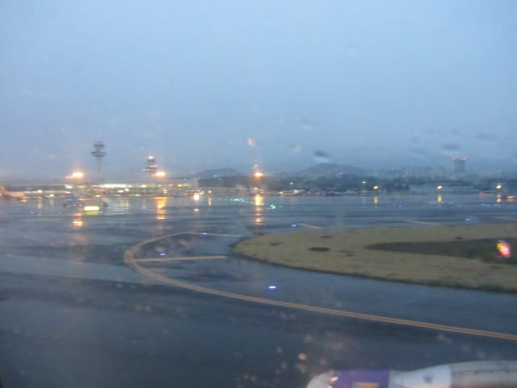

3.23.2017 (星期三)
今晚便出發往韓國, 心情十分興奮!
在荃灣一間餐廳吃完晚餐, 慢慢步行返回家中。休息了一會, 再一次點算行李後, 於深夜十時五十分負起背包, 正式開始這韓國濟州及本島南部春遊旅程。
深夜十一時五分步行抵愉景新城巴士站, 準備搭乘深夜十一時由如心廣場開出的A31號機場巴士往香港國際機場, 估計巴士約深夜十一時十分便會來到這裡。

巴士於深夜十一時二十分才駛來靠站。沿途交通非常暢通, 乘客也不多, 巴士在深夜十二時五分便抵達香港國際機場。
3.23.2017 (星期四)
我們是搭乘香港快運航空公司 (Hong Kong Express), 航班編號 UO 676的飛機往韓國濟州島, 起飛時間是凌晨 2:30。我們昨天在網上已經辦理預先登機手續及列印了登機証, 所以無需往柜位排隊辦理, 方便及節省一些時間。
進入機場離境大樓, 離登機還有兩小時, 便走到 Terminal 2 L6 餐廳區, 打算吃一些東西, 但發覺所有餐廳已經打烊, 便返回 L5 的 7-11 便利店, 買了一個蛋糕、一盒蒸燒賣和一瓶豆漿, 站在便利店內的桌子旁吃。
吃完夜宵, 約凌晨十二時四十分, 也沒有什麼地方可以逛, 便乘電梯往 L3 離境樓層, 進入離境大堂, 辦理完離境手續, 兜兜轉轉圍繞著 Terminal 2 大樓走, 搭乘無人駕駛電動列車, 約凌晨 一時十分便到達511號登機閘口。
離登機還有一小時多, 便打算睡覺片刻。登機閘口附近的候機區有很多可以睡覺的長座椅, 乘客不多, 滿以為很容易便找到有利位置, 怎料比飛機引擎還要嘈吵的鼻鼾聲從四面八方環迴傳來, 最後唯有坐在比較沒有那麼嘈雜的座位休息。
閉目休息了一會後, 看看手錶, 已經是凌晨 一時四十五分, 差不多可以登機了, 便往洗手間。正在如廁之際, 突然聽到廣播叫喊我們兩個的名字, 重複了幾次, 不知發生什麼事, 便匆匆走到登機閘口旁的辦事處, 原來在網上辦理預先登機手續也要通知航空公司的!
凌晨二時登上了飛機。正當所有乘客正在等候飛機起動之際, 機長宣佈因機場其中一條跑道正在維修的關係, 飛機要延遲起飛。
飛機於凌晨三時啟動及起飛, 比原定時間遲了半小時。舷窗外一片漆黑, 什麼也看不到。
飛機起飛了不久, 機艙服務員開始派發韓國入境紙和申報表。填寫了所有入境資料, 將手錶時間往前撥快一小時, 便閉目休息….。
半睡半醒中朦朧聽到廣播, 飛機快將降落濟州國際機場。不久, 窗下開始出現點點疏落的燈光, 漸漸看到密密麻麻的房子。
飛機於韓國時間早上六時三十五分安全降落韓國濟州國際機場 (제주국제공항), 不知不覺中已飛行了兩小時三十分。外面正著大雨, 心裡不禁一沉, 開始擔心今天的行程可能受阻。
